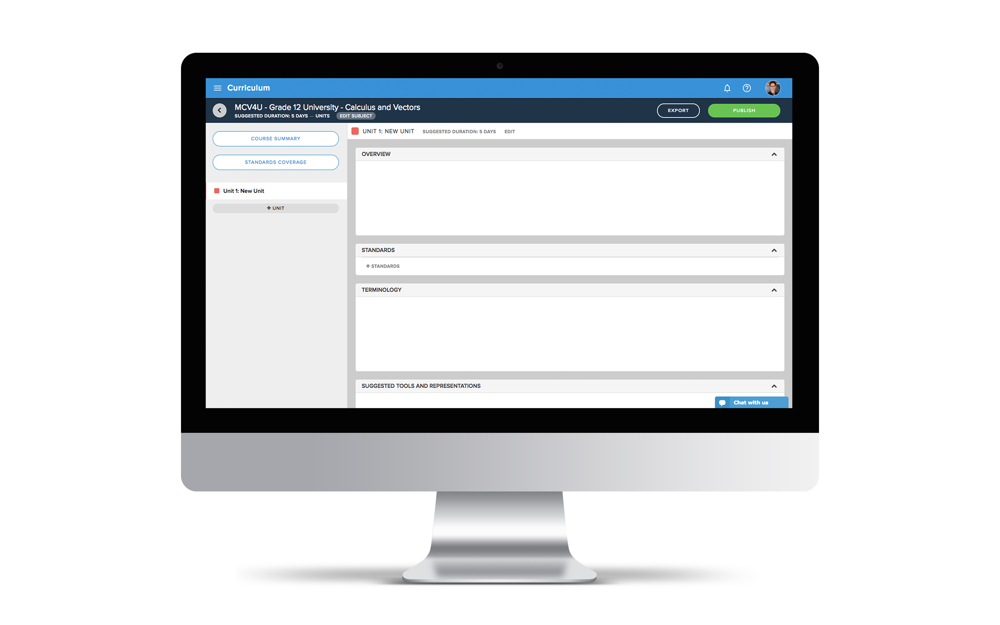
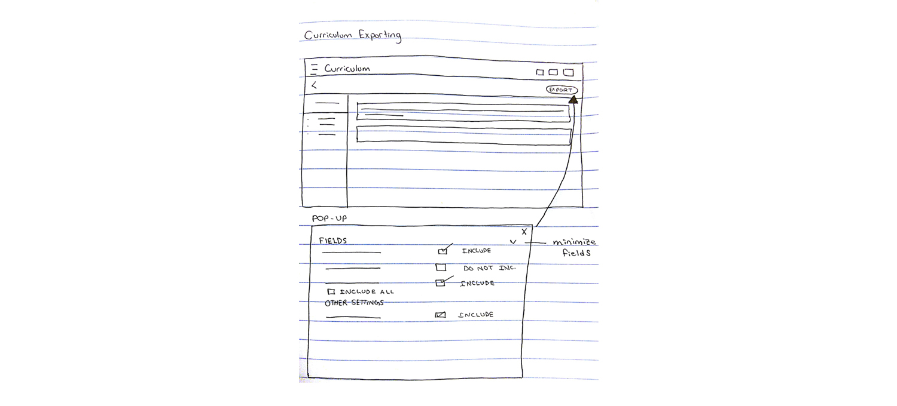
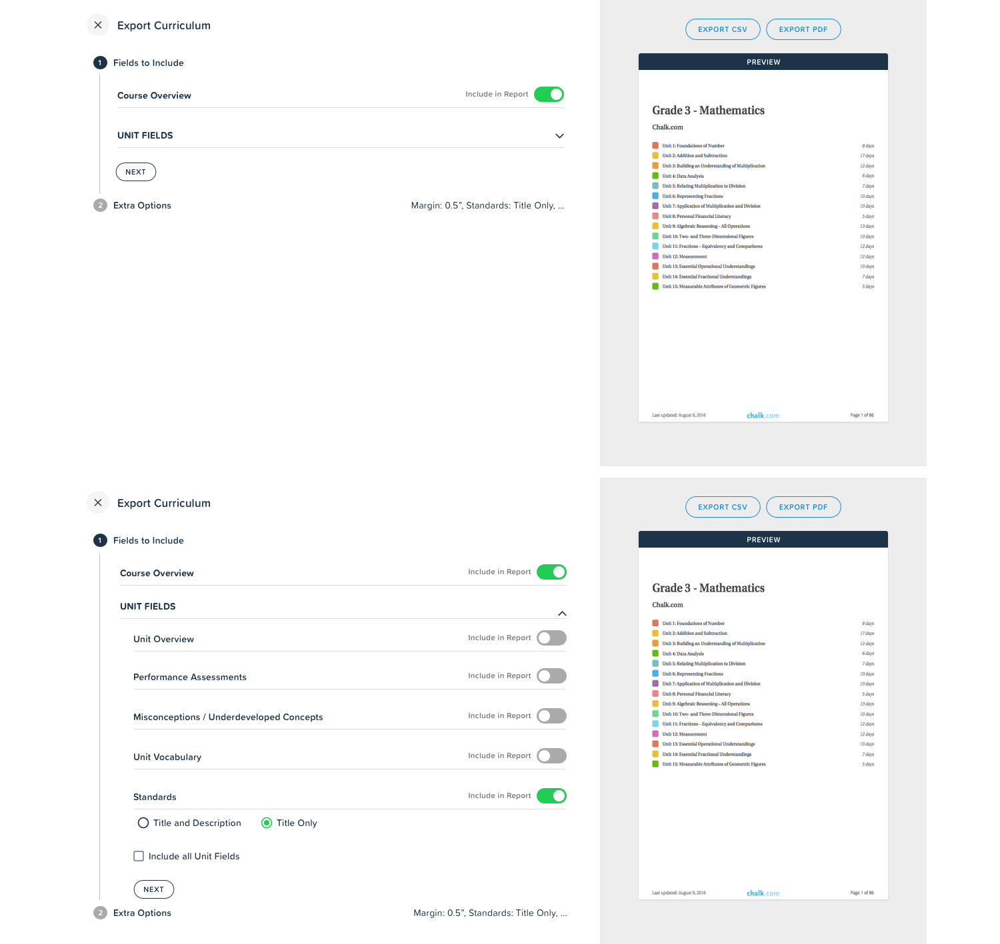
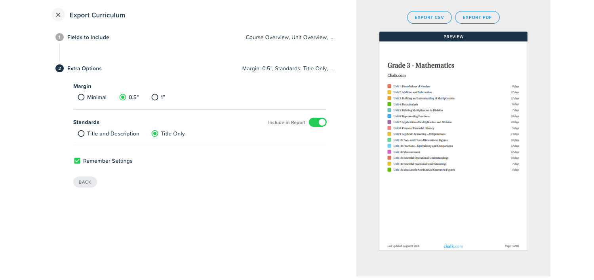

CONTEXT
Chalk.com’s Curriculum Exporting feature allows users to export a subject curriculum into a pdf format.
By clicking on the ‘export’ button in the top right side of the screen below, the user is redirected to a new page containing the pdf.
PROBLEM
Users aren’t capable of selecting any settings before the final pdf is displayed. In order to fix this, a new settings
interface was designed.
The main goal of this design task was to give users the ability to customize their pdf by selecting from the various types of options.
The design challenge involved figuring out exactly what settings users required and how to properly display these settings.

LOW FIDELITY WIREFRAMES

UI/UX Design Requirements:
- Users need to be able to select what content to display in the curriculum document
- Users need to choose from page options (i.e. margin size)
- Users should see a document preview before they export
INITIAL PROTOTYPE
The process of selecting settings is split into two steps. In step 1, the user will be able to select "fields to include".
This includes things such as the Course Overview as well as all the unit fields. For the unit fields, the user can choose to "include all"
or manually select which sections they want to include.
After making all the selections, the user can then click next to proceed to step 2.
Step 1

Step 2 of the process includes selecting "Extra Options". These options are general and can be applied to most curriculum exports.
Things like the page margin and whether standards are title only or title and description can be selected in this step.
The user can also choose to "Remember Settings" so they don't have to always make those selections.
Step 2

By creating this interface, teachers now have a way to select settings before they export their curriculum maps. This is a very important feature
since the exported curriculums are usually shared with principals, parents and other teachers for reference. Before this feature was available,
teachers were exporting the documents and making formatting changes in Microsoft Word or other editing software. With this new feature, teachers
can now use Chalk.com to export properly formatted curriculums ready for sharing.
Wow! Time really does fly when you’re having fun.
I’m afraid this project is over. But I've prepared a few more for you so there’s no need to panic!
BACK TO MY OTHER WORK!